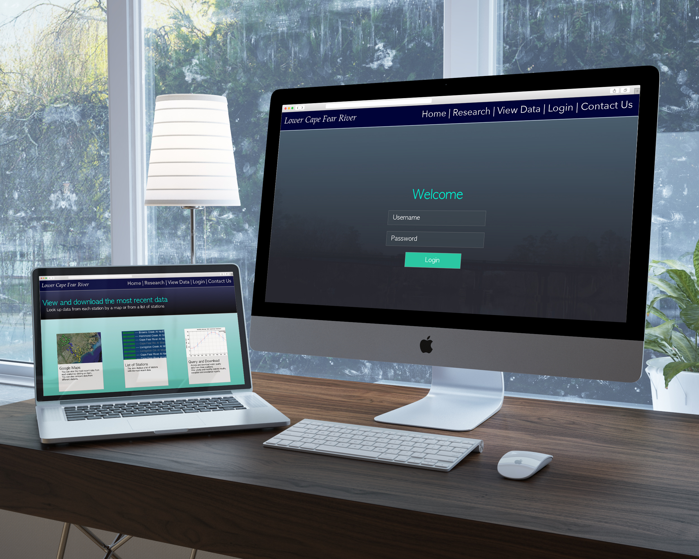
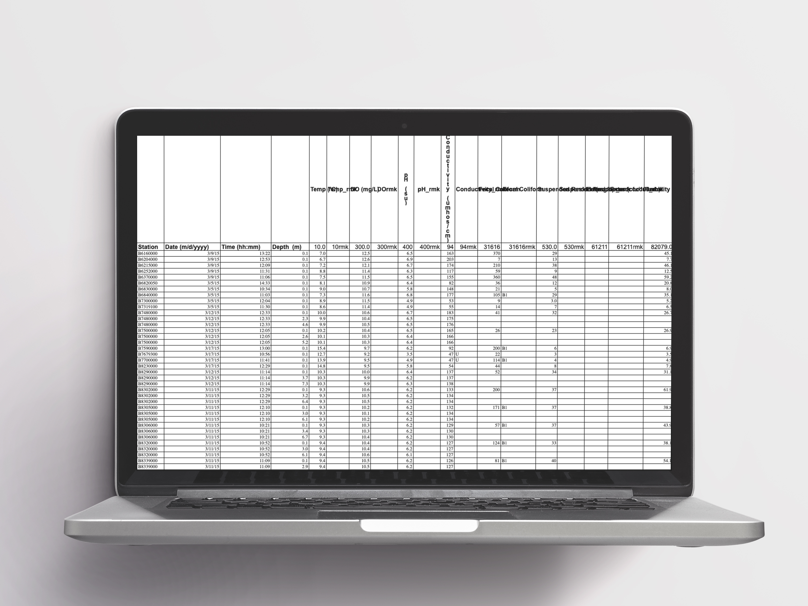
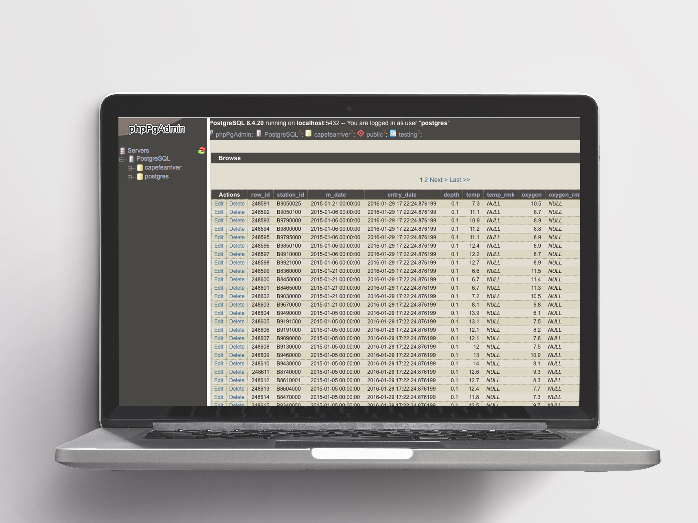
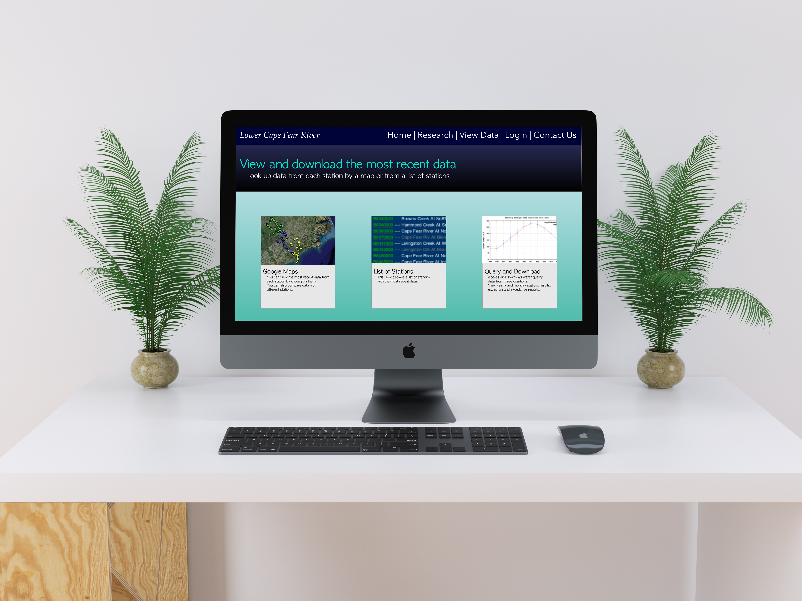

LCFRP Marine Science Research App
The Lower Cape Fear River Program is a large-scale water quality and environmental assessment program covering the Cape Fear River Estuary and a large portion of the lower Cape Fear River watershed. A collaboration of academia, government, industry, and the public, the program is located at and administered by the Center for Marine Science at the University of North Carolina at Wilmington. Program objectives are to develop an understanding of the fundamental scientific processes shaping and controlling the ecology of the Cape Fear River system and provide a mechanism for information exchange and public education. With the commencement of monitoring in all three basins, regulators will have comprehensive scientific based information with which to form educated decisions regarding activities in the Cape Fear River basin.
brief
- Keeping stakeholders happy by working on requests and delivering on them
- Improving the UI/UX of the application for researchers to process reports and upload data
- Streamlining the workflow and availability of reports & data for many stakeholders including environmental entities, regulatory entities & municipalities
What we started with
Researchers produced complex spreadsheets full of data that they would work by hand to process statistics for their reports which usually involved entire weeks of work. Impossibly complex for anyone outside of the lab to read

Next Steps
We had a basic web app set up to process complex data and output. We programmed scripts to handle the data and process reports that would save researchers weeks of work in an instant
Final Iteration
I've designed the final iteration of the web app after consulting with stakeholders about expanding the current web app to be more intuitive and user friendly
